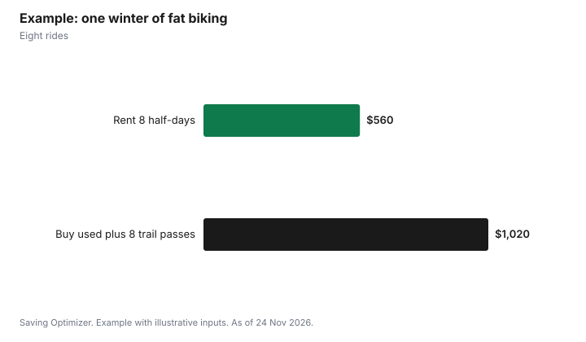

Sports · Canada
Fat Biking in Winter: A Canadian Cost Guide

Fat biking lets you ride snowy trails in winter. Rent first: many ski and Nordic centres and bike shops rent fat bikes, often with a trail pass. Some municipal trails are free, while groomed centres charge for access. If you ride often, a used fat bike can pay for itself in a season or two. Dress in layers and keep tire pressure low.
Key takeaways
- Rent a fat bike a few times before buying.
- Groomed fat bike trails at Nordic and ski centres usually need a trail pass; some municipal trails are free.
- Dress in layers with a windproof outer, warm gloves or pogies, and winter boots.
- Low tire pressure gives grip in snow; rinse off road salt after rides.
- Example: eight rentals cost $560; a used fat bike costs $900 plus $15 trail passes, so buying wins after about 17 rides.
Rent or buy
| Option | Example cost | Notes |
|---|---|---|
| Half-day rental | $70 | May include trail pass |
| Trail pass | $15 | At groomed centres |
| Used fat bike | $900 | Check tires and bearings |
| New fat bike | $1,800 and up | More options |
Clothing
- Base layer that wicks sweat.
- Insulating mid-layer.
- Windproof jacket.
- Warm gloves, or pogies on the handlebars.
- Winter boots with flat pedals, or winter cycling boots.
Care
- Rinse road salt off after rides.
- Lube the chain more often in wet snow.
- Check tire pressure before each ride.
- Store the bike somewhere cool and dry to avoid condensation.
Plan: an example season
These are example prices, not quotes. Eight half-day rentals at $70 each: $560. A used fat bike at $900 plus eight trail passes at $15: $1,020 in the first season, and $120 a year after that.

Renting wins for a few rides a season; buying wins if you ride often over several seasons. For bike maintenance, see bike tune-up costs, and for other winter sports, cross-country skiing and snowshoeing.
Sources
- Trail access rules vary by municipality and centre; check before riding, checked 24 Nov 2026.
Frequently asked questions
How much does it cost to rent a fat bike?
It varies by location. Many ski and Nordic centres and bike shops rent by the half day or day, sometimes with a trail pass.
Do I need a trail pass for fat biking?
At groomed centres, usually yes. Some municipal multi-use trails are free; check local rules.
Should I buy a fat bike?
If you'll ride often for several seasons. Rent a few times first.
What should I wear fat biking?
Layers: a wicking base, an insulating mid-layer, a windproof jacket, warm gloves or pogies and winter boots.
What tire pressure should I use?
Low pressure for grip in snow. Follow the tire maker's range and adjust for conditions.
Researched and drafted with AI assistance and fact-checked against official Canadian sources. How we create content.
Note: Amounts are examples. Check rental and trail pass prices locally. Education only.